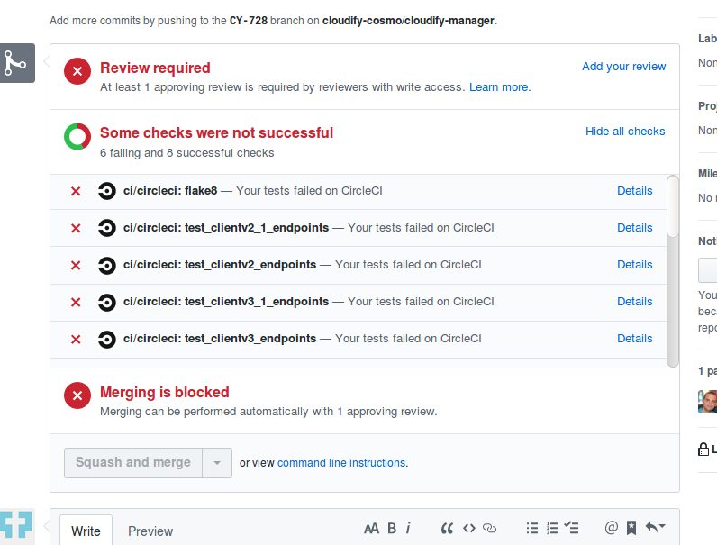
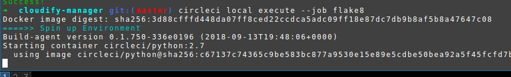
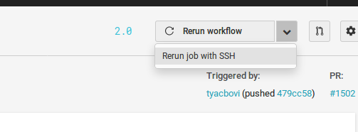

Łukasz Maksymczuk
Codilime
Cloudify team
A way to deliver high quality products ...on time
Idea formalized ~2000, "extreme programming"
Everybody's doing it!
...a workflow
Commit early, commit often
Everyone commits to the mainline every day
Build on every commit
Fix broken builds fast
...a workflow
...software
Automated checks
Pull Request status
Integration servers
...a workflow
...software
...organization
Combination of the workflow, the team's attitude, and the right software
Tests!
More tests!
Stable tests!
Fast tests!
Automation
Single source repository?
Measure coverage deltas
Fix, mock, retry
Two-stage pipeline
Automate :)
Widely used
Open source
Free for open source projects
Easy configuration
Lots of setup
...but still widely used
Fast builds
Good UX
Somewhat pricey
On-prem/SaaS
Recent upgrade to 2.0 (and 2.1)
Windows!
Travis...
..switched to Circle
Jenkins
version: 2.0
jobs:
build:
docker:
- image: alpine:3.7
steps:
- run:
name: The First Step
command: |
echo 'Hello World!'
echo 'This is the delivery pipeline'
workflows:
version: 2
Example_Workflow:
jobs:
- Hello-World
- I-Have-Code:
requires:
- Hello-World
- Run-With-Node:
requires:
- Hello-World
- Hold-For-Approval:
type: approval
requires:
- Run-With-Node
- I-Have-Code
attach_workspace
persist_to_workspace
add_ssh_keys
store_artifacts
run vs deploy
Test splitting
steps:
- restore_cache:
keys:
# when lock file changes, use increasingly general patterns to restore cache
- pip-packages-v1-{{ .Branch }}-{{ checksum "Pipfile.lock" }}
- pip-packages-v1-{{ .Branch }}-
- pip-packages-v1-
- save_cache:
paths:
- ~/.local/share/virtualenvs/venv # this path depends on where pipenv creates a virtualenv
key: pip-packages-v1-{{ .Branch }}-{{ checksum "Pipfile.lock" }}
Reusable parts of config
orbs:
slack: circleci/slack@volatile
jobs:
myjob:
steps:
- run: echo "hello"
- slack/notify:
message: hello
local execution
circleci local execute --job flake8
Enable using add_ssh_keys in a workflow
Interactive usage
Example - fetching artifacts
API_PREFIX = (
'https://circleci.com/api/v1.1/project/github/'
'{organization}/{{project}}/'.format(
organization=os.getenv(
'CIRCLE_PROJECT_USERNAME', 'cloudify-cosmo')))
URL_TEMPLATE = API_PREFIX + 'tree/{branch}'
ARTIFACTS_TEMPLATE = API_PREFIX + '{build[build_num]}/artifacts'
nightly:
triggers:
- schedule:
cron: 0 7 * * *
filters:
branches:
only: master
jobs: *workflow_jobs
https://github.com/tehasdf/circleci-talk
https://circleci.com/docs/
https://martinfowler.com/articles/continuousIntegration.html